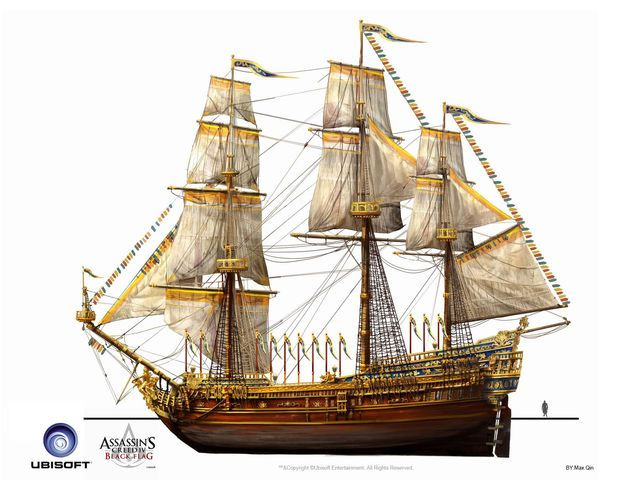
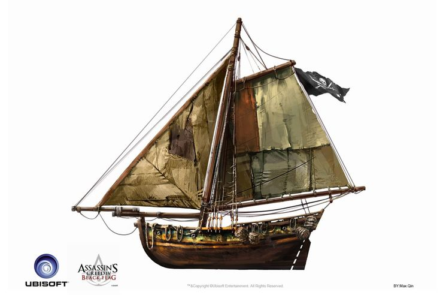

Os navios em Assassin's Creed IV: Black Flag são o coração da experiência do jogo, transformando o oceano das Caraíbas num verdadeiro campo de batalha e exploração. O destaque principal vai para o Jackdaw, o navio do protagonista Edward Kenway, mas todo o sistema naval do jogo destaca-se pelo realismo visual e pela jogabilidade fluida.
Rico em Detalhes Históricos: Os navios foram desenhados com base nas embarcações do século XVIII. É possível ver a textura da madeira envelhecida, o balanço das cordas com o vento, as velas grandes de pano e o movimento da tripulação a trabalhar no convés.
Personalização: À medida que avanças no jogo, podes mudar a aparência do Jackdaw. É possível alterar as velas (escolhendo cores e símbolos), a figura de proa (as estátuas na frente do navio) e o leme, permitindo deixar a embarcação com um aspeto temático ou intimidador.

Classe: É uma Escuna/Brigue Modificado de dois mastros, com cerca de 60 metros de comprimento.
Evolução Visual:
No início do jogo, o Jackdaw é uma embarcação simples, modesta e com velas desgastadas. À medida que compras melhorias, o seu aspeto muda drasticamente:
Casco: A madeira ganha reforços de ferro e metal maciço nas laterais e na proa.
Velas e Leme: Podes equipar velas de várias cores (pretas, vermelhas, brancas) com emblemas piratas ou dos Assassinos, além de lemes embutidos com detalhes em ouro.
Figura de Proa: A escultura na frente do navio pode ser personalizada com figuras como sereias, águias, demónios ou esqueletos.
Jogabilidade e Desempenho:
O grande diferencial do Jackdaw em relação a todos os outros navios do jogo é a sua versatilidade:
Velocidade e Manuseio:Por ser menor e mais leve do que uma Fragata ou um Man-o'-War, o Jackdaw é extremamente ágil. Consegue fazer curvas apertadas rapidamente e atingir altas velocidades com o vento a favor.
Capacidade de Adaptação:Ele foi projetado para poder combater desde pequenas canhoneiras até frotas inteiras de navios militares pesados.
O Arsenal Completo do Jackdaw:
À medida que investes recursos (metal, madeira, pano e dinheiro), podes equipar o Jackdaw com um conjunto de armas completo para qualquer situação:
Canhões Laterais (Broadside Cannons):O teu ataque principal. Quando totalmente melhorado, o Jackdaw conta com até 23 canhões de cada lado (46 no total), disparando uma salva devastadora de bolas de ferro.
Bolas Pesadas (Heavy Shot): Disparadas sem fazer mira nas laterais, funcionam como um "escopetasso" à queima-roupa que causa um dano gigantesco em navios emparelhados.
Morteiros (Mortars): Permitem lançar projéteis explosivos a longa distância com uma mira circular na água, perfeitos para atacar fortificações ou começar o combate antes que os inimigos te vejam.
Bolas de Corrente (Chain Shot): Disparadas pela proa (frente), servem para destruir os mastros dos navios inimigos e desacelerá-los instantaneamente.
Abalroamento Reforçado (Ram):Uma estrutura de metal reforçado na proa que permite destruir navios menores simplesmente colidindo contra eles em alta velocidade.
Barris de Pólvora (Fire Barrels): Lançados pela popa (trás) para explodir navios que estejam a perseguir o Jackdaw.
Peças de Caça (Swivel Guns):Pequenos canhões de precisão usados após uma salva lateral para atingir pontos fracos revelados na casca do navio inimigo.
A Vida a Bordo:
O Jackdaw também funciona como a tua base de operações:
Cabine do Capitão:Fica na parte de trás do navio. Nela podes ver os teus colecionáveis, mudar de trajo, acompanhar as tuas estatísticas e gerir a Frota de Kenway.
A Tripulação:Os marinheiros recrutados em tavernas ou salvos no mar mantêm o navio a funcionar, operam os canhões e lutam ao teu lado durante as abordagens.
Imagem do Jackdaw:
.jpg)
Aparência: Pequeno, elegante e com dois mastros. Possui uma estrutura leve e pouca blindagem na casca.
Comportamento e Força: É o menor navio de guerra do jogo. Tem poucos canhões nas laterais e ataca maioritariamente com pequenas rajadas.
Jogabilidade: São extremamente rápidos e ágeis, mas muito frágeis. Servem como alvos fáceis no início do jogo para conseguir recursos básicos (como madeira e mantimentos) e para restaurar a vida do Jackdaw durante batalhas maiores através das abordagens.
.jpg)
Aparência: Um barco minúsculo, quase sem estrutura superior, equipado apenas com um mastro simples e um ou dois canhões na proa.
Comportamento e Força: Não tem poder para enfrentar um navio grande sozinho, mas anda quase sempre em grupos de 3 a 5 embarcações.
Jogabilidade: São irritantes e rápidos. Tentam posicionar-se à tua frente para disparar e fugir. Como são muito fracos, um único tiro de canhão lateral ou até um disparo de projétil frontal costuma destruí-los instantaneamente. Nem sequer podem ser abordados — afundam logo.

Aparência: Navio de porte médio, bem proporcional, com dois mastros grandes e uma quantidade considerável de canhões nas laterais.
Comportamento e Força:É o "equilíbrio perfeito" entre velocidade e poder de fogo. Os brigues inimigos são agressivos e gostam de usar a tática de abalroamento (investir contra o teu navio com a proa para causar grande dano).
Jogabilidade: Exigem mais cuidado nas manobras. Para vencê-los, é ideal usar correntes para desacelerá-los e evitar que te abalroem, atacando de seguida as suas laterais vulneráveis. São uma excelente fonte de metal e pano para melhorias.
.jpg)
Aparência:Navio grande, robusto, com três mastros altos e múltiplos conveses de canhões. Transmite uma presença de poder e autoridade militar.
Comportamento e Força:Muito perigosa. Possui um poder de fogo elevado, consegue disparar barris de pólvora pela popa e usa argamassa/morteiros à distância para te atingir antes de te aproximares.
Jogabilidade:Um verdadeiro teste para o Jackdaw antes de estar totalmente melhorado. Tentar atacá-la de frente é arriscado. A melhor tática é esquivar-te dos tiros de morteiro, aproximar-te pelas costas ou usar morteiros próprios para enfraquecê-la antes do combate próximo.
.jpg)
Aparência:Uma autêntica fortaleza flutuante. Gigantesco, com três mastros enormes, estrutura de madeira reforçada e até três andares cheios de canhões nas laterais (mais de 60 canhões no total).
Comportamento e Força:É o navio mais poderoso do jogo regular. Uma única salva completa de canhões laterais de um Man-o'-War pode destruir grande parte da vida do Jackdaw. Além disso, a sua tripulação é numerosa e muito bem armada durante as abordagens.
Jogabilidade:Vencer um Man-o'-War exige planejamento e um Jackdaw bastante melhorado. Precisas de evitar a todo o custo ficar parado ao lado das suas laterais. O ideal é atacar pela retaguarda, usar morteiros à distância e manter-te em movimento constante. Saquear um Man-o'-War rende enormes quantidades de ouro e recursos raros.
.jpg)
Aparência:Versões gigantescas e modificadas de Man-o'-War, localizadas nos quatro cantos do mapa. Cada um tem um visual único e intimidador.
Comportamento e Força:São os chefes supremos do mar. Cada um tem um estilo de combate próprio (um é focado em abalroamento ultra-rápido, dois atacam em dupla, outro tem morteiros devastadores).
Jogabilidade:Não podem ser abordados — só podes afundá-los. Exigem que o Jackdaw esteja 100% melhorado e que tenhas um domínio perfeito das manobras de navegação.
Aqui está um video de uma batalha contra um desses Navios Lendários